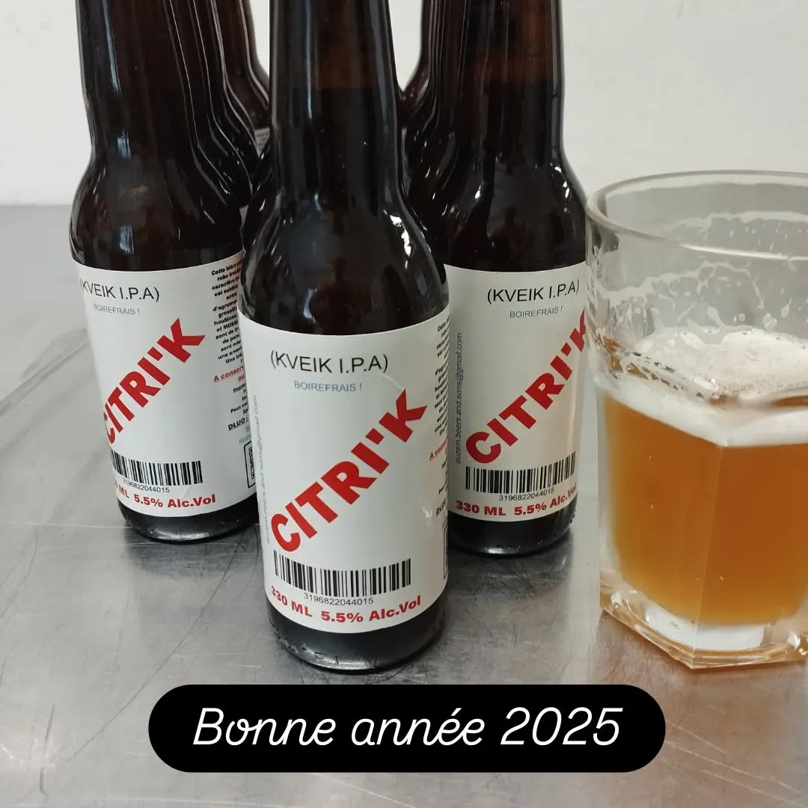
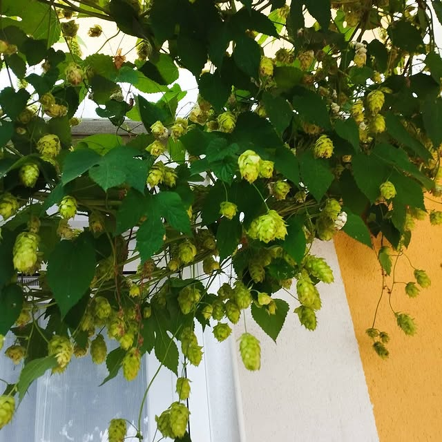

Citri’K
Kveik IPA · 5,5 % vol.
IPA fruitée aux agrumes, à l’amertume équilibrée.
Se renseigner ↗La carte / Auzem’Beers & Sons
Découvrez la gamme. Pour les disponibilités du moment, échangez directement avec le brasseur.

Kveik IPA · 5,5 % vol.
IPA fruitée aux agrumes, à l’amertume équilibrée.
Se renseigner ↗
7,4 % vol.
Notes de fruits secs et d’épices douces.
Se renseigner ↗
Stout au piment · 9,9 % vol.
Notes de cacao et piment d’Espelette.
Se renseigner ↗
Blanche · 6,9 % vol.
Une bière blanche à découvrir auprès du brasseur.
Se renseigner ↗Les photographies de houblon et de brassage sont des images d’ambiance. Les disponibilités ne sont pas synchronisées avec un stock en temps réel.